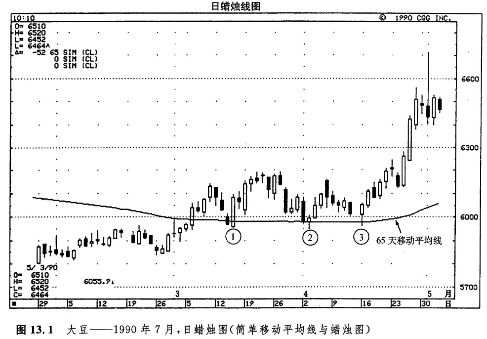
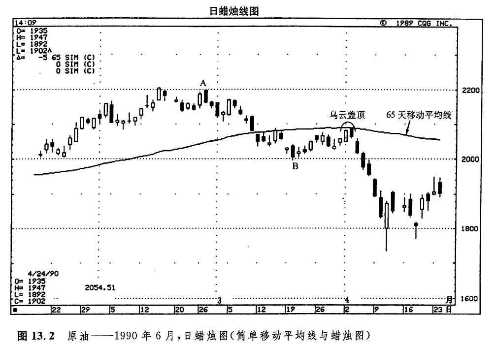
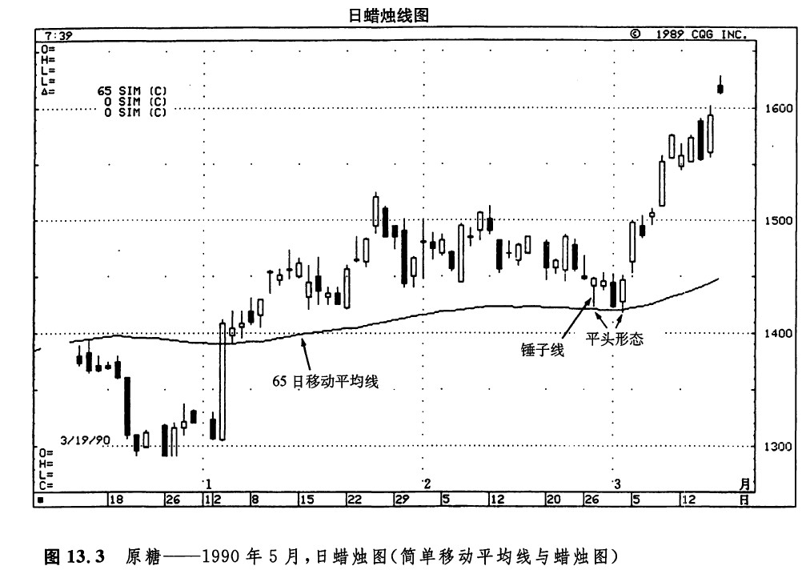

移动平均线能够为我们提供客观的交易策略，其中包括定义明确的交易规则。许多计算机化的技术型交易系统主要建筑在移动平均线的基础之上。怎样应用移动平均线呢？这个问题的答案多种多样，从不同的交易风格和交易哲学出发，就有不同的取舍。以下，我们列出了移动平均线的一些常见的用法。
1.通过比较价格与移动平均线的相对位置，构成一个趋势指标。举例来说，如果我们判断市场正处于中期的上升趋势中，那么有一个很好的衡量标准，就看价格是不是居于65天移动平均线的上方。而对于更长期的上升趋势来说，价格必须高于40周移动平均钱。
2.利用移动平均线构成支撑水平或阻挡水平。当收市价向上超越某一条特定的移动平均线时，可能构成看涨的信号。而当收市价向下低于某个移动平均线时，构成看跌的信号。
3.跟踪移动平均线波幅带（也称为包络线）。这些波幅带是将移动平均线向上或向下平移一定的百分比后形成的，它们也起到支撑或阻挡作用。
4.观察移动平均线的斜率。举例来讲，如果移动平均线在一段持续稳步的上升之后转向水平发展，乃至开始下降，那么可能构成了一个看跌信号。在移动平均线上作趋势线，是监测其斜率变化的一个简单易行的办法。
5.利用双移动平均线系统来交易。这一方法本章稍后还要详细讨论。
在下面介绍的实例中，我们采用了各种移动平均线。它们的时间参数并不是按照最优化的要求选择的。今天最优的移动平均线，明天未必还是最优的移动平均线。这里既选用了一些人们广泛使用的移动平均线，也选用了一些不那么流行的移动平均线，不过，后者是以诸如菲波纳奇数字这样的工具为基础的。具体应当采用什么样的移动平均线，并不是我们这里的核心问题。我们真正关心的是，如何将移动平均线与蜡烛图技术综合起来。
我喜欢选用65天的移动平均线作为一种广谱的移动平均线。从我个人的经验来看，这种平均线似乎在许多期贷市场上都有良好的表现。如图13.1所示，在①、②、③点所示的区域，一条65天移动平均线数度为市场提供了支撑。在这几处，除了该移动平均线为市场提供了支撑作用以外，我们在点①处看到了一个看涨吞没形态，在点②处还看到了一根锤子线和一个孕线形态，在点③处则是另一个锤子线。

如图13.2所示，4月2日和3日，若干技术因素汇集在一起。明眼的朋友由此可以得到一个警告信号：危机就在眼前。我们不妨具体分析一下这些技术因素。

1.早在3月初，价格已经向下跌破了65天移动平均线。从这一点看，这条移动平均线已经转化为一条阻挡线。
2.4月2日和3日的两根蜡烛线形成了一个乌云盖顶形态。同时，这个乌云盖顶形态也标志着市场向上试探由这条移动平均线构成的阻挡水平的失败。
3.4月3日不只是完成了上述乌云盖顶形态，也不仅是对该移动平均线的试探的失败，它与从A到B的下跌行情的50%回撤水平仅有7个基本价格单位的差距。
如图13.3所示，市场在2月份对65天移动平均线进行了试探，并形成了一根锤子线，从而验证了由该平均线形成的支撑水平。几天之后，市场重新向下试探了这些低点，进而形成了一个平头底部形态。

下一篇：双移动平均线
上一篇：指数加权移动平均线与MACD摆动指数
copyright @ 2018 制作：汉钛电线，Hingtak Wire & Cable LLC